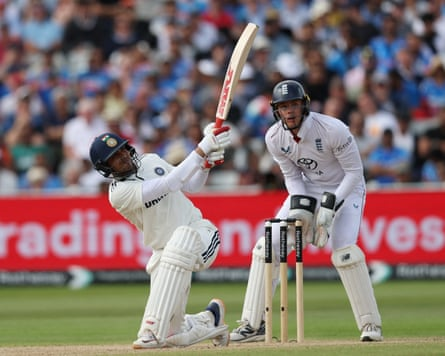

The sound of Shubman Gill’s bat could stop traffic. The man’s forward defence lands with the crack of John Bonham’s drum. It is a shot no one really notices in the moment but demands everyone’s attention as soon as it’s over because of the way noise resounds around the ground in the split second afterwards, like a teacher smacking his hand down on a table to get the pupils to shut up.
It is the very model of the shot. His bat comes down like Gandalf’s staff. Pick it, clip it, stick it on social media and you could have kids all across India striding out of their ground to pat the ball back the way it came.
There has been a pick-and-mix of sixes hit in Birmingham this week, 24 so far, which equals the record for a Test in this country and there is still a day left to play.
Gill belted plenty of them, so many that England seemed to lose track altogether. When he skied one, Ollie Pope ended up blundering in from long-leg to try to catch it with his arms shrugged wide in apology to everyone else because he did not have the slightest idea where the ball had actually gone.
It was the first chance Gill had given in this match, which might have been why Pope seemed so amazed to find it coming his way. When Gill hit another one up off Shoaib Bashir, the bowler had the good sense to call it for himself.
Midway through the morning session, round about the time people were just reaching into their picnics for a first sandwich, Rishabh Pant conjured up an entirely new shot, a sort of standing sweep in which he whipped his bat down, around and under one of Josh Tongue’s 90mph inswingers with so much torque that he had to drop his body down into a crouch during his follow-through. He was on his knees as he turned to watch the ball disappear into the depths of the Raglan Stand.
Pant plays strokes that are beyond the imagining of even England’s batsmen and they have hit a fair few too in the past four days, from Jamie Smith’s ramrod-backed hook shots off Prasidh Krishna, to Harry Brook’s step-and-fetch-it smack down the ground off Mohammed Siraj. There have been pick-ups over midwicket, flat-bats down the ground, slog-sweeps into the grandstands, scoops, uppercuts, switch-hits and reverses. You will be able to catch them all on the highlights reels.
Shubman Gill hits one of eight sixes in India’s second innings.Photograph: Paul Childs/Action Images/Reuters
But not Gill’s forward defence. And that is the shot that has been the backbeat of this match. Pock, pock, pock, as insistent as the tick-tock of the clock. Each and every one felt like a rebuke to English cricket and all the fans in the Hollies Stand who spent the day chanting about how boring he was being by refusing to declare.
They were a rebuke to everyone who ever said that Gill’s generation do not have the technique, or the temperament, needed to play Test cricket the old-fashioned way. He used it to break the back of the English attack, who were so thoroughly spent by the time it was done that it would be a surprise if this combination of bowlers played another game together.
Gill has spent the past four days breaking Test records like they are plates at a Greek wedding: the highest score by an India captain, the highest score by an Indian in England, the highest score by an Indian outside Asia, the highest aggregate match score by an Indian. In 12 and a half hours of batting, spanning 549 balls, he has, single-handed, scored 42% of his side’s runs. All this from a man who had made one Test century outside Asia before this tour. There has not been anything like it from a new captain since South Africa’s Graeme Smith peeled off those back-to-back double hundreds in 2003.
He did it despite coming into this match under all sorts of pressure. One-nil down in his first series as captain after conceding 373 in the fourth innings at Headingley, he found himself having to explain the baffling decision to leave Jasprit Bumrah and Kuldeep Yadav out of the team, which meant he had to do without his best fast bowler and his best slow bowler, as well as his team’s senior pro and de facto captain in the field, so they could fit in a couple of willing all-rounders to prop up the batting. If he had failed, they would have failed, and if they had failed, there would have been hell to pay.
Sixes? They come by the dozen in this day and age, but a man who can defend himself like Gill has this week, that is something worth paying to see.